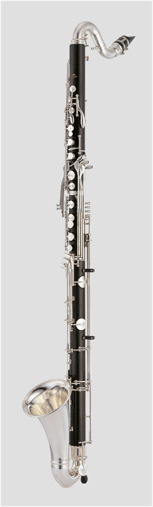

About Me
I am a bass clarinet player based in Orlando, Florida. Currently, I am pursuing a degree in Computer Engineering at the University of Central Florida. I have been playing bass clarinet since 2014.
A specialist in Bass Clarinet

Photo by Yamaha / User:Gisel / CC BY-SA 4.0, via Wikimedia Commons
I am a bass clarinet player based in Orlando, Florida. Currently, I am pursuing a degree in Computer Engineering at the University of Central Florida. I have been playing bass clarinet since 2014.
Bass Clarinet
Bass Clarinet
Bass Clarinet